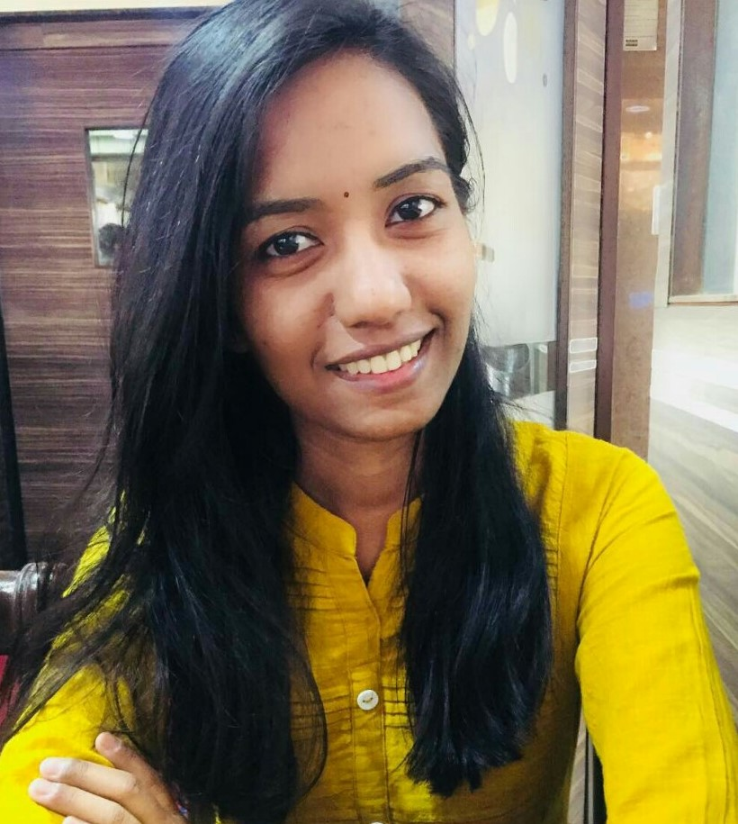

|  |
Aishwarya Bharambe
Software Engineer I at ICUMedical LLP
MTech-Advanced Computing and Data science
|
Completed Post graduation (MTech) in Advance Computing and Data Science from Sandip University Nashik in Collaboration with CDAC-PUNE and Graduation (BE) in Electronics and Telecommunication.
Currently working as Graduate Engineer Trainee in ICU Medical Chennai . Carried 4 POCs which gave experience in Python (OpenCV , Django).
Worked as Intern in CDAC-ACTS, Pune where got an opportunity to work on Machine Learning ,Deep Learning, OpenCV for image processing . Worked on project for cancer detection using deep learning and Machine Learning Algorithms. Got to learn and
work on python libraries such as Sklearn, OpenCV, Keras,etc.
Willing to passionately learn and work in field of Machine Learning, Deep Leaning
Education
| Year |
Institute |
Degree |
| 2017-2019 |
Sandip University,Nashik |
CDAC-Mtech (Advanced Computing And Data Science) |
| 2013-2017 |
K.K.Wagh Institute of engineering education and research, Nashik |
BE(Electronics & Telecommunication) |
| 2011-2013 |
Sri.Chaitanya Junior Kalasala ,Nizampeth,Hyderabad |
H.S.C |
| 2001-2011 |
Maharishi Vidya Mandir Yavatmal |
S.S.C |
Skills
| logistic regression | 😊😊 |
| statistics | 😊 |
| regression | 😊😊😊 |
| mysql | 😊😊😊😊 |
| deep learning | 😊😊 |
| python | 😊😊😊😊 |
| data science | 😊😊😊 |
| data visualization | 😊😊😊 |
| tableau | 😊😊😊 |
|
| django | 😊😊😊😊 |
| bootstrap | 😊😊😊😊😊 |
| nlp | 😊😊 |
| sql | 😊😊😊😊 |
| machine learning | 😊😊😊😊 |
| html | 😊😊😊😊😊 |
| power bi | 😊😊😊😊 |
| linux | 😊😊😊😊 |
| raspberry pi | 😊😊😊😊 |
|
My contact details